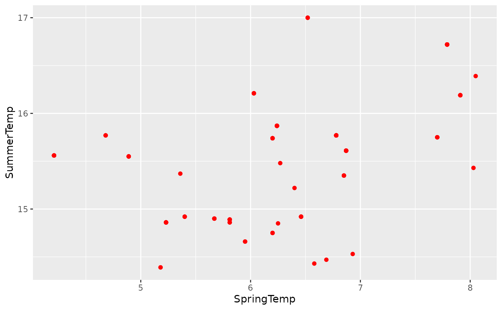

packagetutorial.rmdThe following tutorial is based on the butterfly data set from R. This tutorial was created to show how we can condense the data from the butterlfly data set, using several functions.
My r package is relatively simple, and its functions will allow us to calculate, vizualize and query/process data.
Because, this tutorial uses the butterfly data set soley, we will need to make sure we have the data located in our r studio and we will import it to our screen. If the data set is not in our r studio, we will upload it there from our computer.
The next step is to download one necessary package which is tidyverse.We can run the code as so for our tidyverse package:
If everything loaded correctly we can move on to the actual function.
Since, our tidyverse package is already installed, we just need to load in the package. After doing so we want to make sure we can use the data set in our code by using the read_csv function. Lastly we’ll use the view function to make sure it worked.
## Our next step will be to make sure we run library tidyverse and then read in our data set. The code should be as follows:
library(tidyverse)
Butterfly_data <- read_csv("Butterfly_data.csv")## Rows: 144 Columns: 5
## ── Column specification ────────────────────────────────────────────────────────
## Delimiter: ","
## chr (1): ButterflySpecies
## dbl (4): Year, Day, SpringTemp, SummerTemp
##
## ℹ Use `spec()` to retrieve the full column specification for this data.
## ℹ Specify the column types or set `show_col_types = FALSE` to quiet this message.
view(Butterfly_data)Because the Butterfly data set has a column for both Spring and Summer temperatures, I wanted to create a function that would help us find an average temperature between the two columns.
calc_butterflytemp_mean <- function(sT, st) {
temp_mean <- mean(sT * st/2)
return(temp_mean)
}
calc_butterflytemp_mean(6.85,15.35)## [1] 52.57375The function should’ve given us the value of 52.57375 which is the mean of 6.85 and 15.35
The second function we will use will allow us to vizualize data from the dataset. I chose to use Spring and Summer temp once again because I believe it’s good to look at both a written explanation of data as well as a graph. We will load in tidyverse just to be sure and ggplot2 just to be safe.
library(tidyverse)
library(ggplot2)
bdscatter_plot <- function(data, x, y) {
ggplot(data, aes({{x}}, {{y}})) +
geom_point(color = "red")
}
bdscatter_plot(Butterfly_data, SpringTemp, SummerTemp)
Now we have a visual of our plot
###Converting Temperature from Celsius to Fahrenheit
The last function we will use will allow us to convert our temperatures from Celsius to Fahrenheit. Because, for some of us Fahrenheit is easier to interprate data we will use a function to convert. We will first load in our library tidyverse package once again to be sure. Next we’ll use Spring Temperature for our example and enter the correct formula and lastly, we should be able to convert Celsius to Fahrenheit.
library(tidyverse)
cels_to_fah <- function(sT) {
fahrenheit <- ((sT + 32)) * ((9/5))
return(fahrenheit)
}
cels_to_fah(6.85)## [1] 69.93All of the functions I used were mainly to help with mathematical data. Mathematical data is usally what I struggle with the most so having functions that make it easier to understand, helps out a lot. The mean function was used to calculate the mean of Summer and Spring temps. The ggplot function was used to visualize the difference in our data. Lastly, the temperature function was used to convert the temperature from Celsius to Fahrenheit.